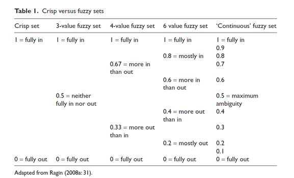
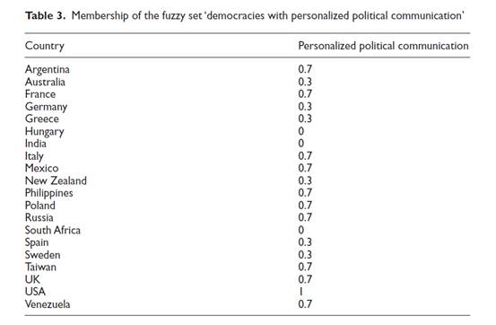
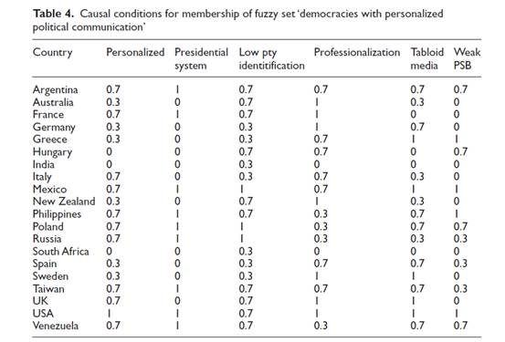
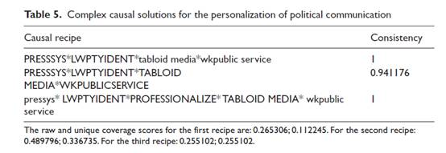
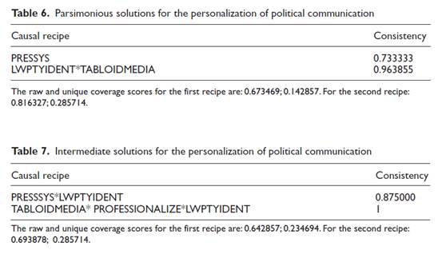

收录于合集
文献来源：
Downey J, Stanyer J. Comparative media analysis: Why some fuzzy thinking might help.Applying fuzzy set qualitative comparative analysis to the personalization of mediated political communication[J]. European Journal of Communication, 2010,25(4):331-347.
作者介绍：
John Downey 英国拉夫堡大学传播与文化研究中心主任，上海交通大学特聘教授，主要研究方向为比较媒体研究、政治传播、传播学方法论等。http://www.lboro.ac.uk/departments/socialsciences/staff/john- downey/
James Stanyer 英国拉夫堡大学传播与媒体学教授，社会科学系主任，主要研究方向为国内与跨国政治传播。
http://www.lboro.ac.uk/departments/socialsciences/staff/james-stanyer/
** 编者按：**
此前，政文观止曾通过一篇方法论的文献为读者介绍了清晰集QCA方法的基本原理和简单应用。（十分钟学会QCA）在此基础之上，今天小编特选译一篇政治传播领域的具体研究，为各位读者展示QCA的进化版本和高阶操作。
比较媒体研究：问题与方法
对于国内外学者而言，政治传播都是方兴未艾的领域，传播学者和政治科学家都为此倾注了大量的心血。然而，Hallin等学者指出，传播领域的核心问题并没有得到解答：为什么我们拥有如今这样的媒体？（Why do we have the media we have？）这一问题在某一政治系统中是无法检验的，只有通过不同政治系统的比较才能得出答案，因此比较媒体研究将成为政治传播的崭新方向。
然而，无论是相对于其他比较研究，还是相对于社会科学的其他领域，比较媒体研究的方法远远没有成熟。部分学者采用大规模的定量分析，却沉溺于变量而无法提出深入的解释；部分学者专注于某几个案例的挖掘，却不得不面对源源不断的反例。在这种情况下，更为晚近的研究开始运用基于密尔方法的最具相似性系统设计（MSSD）和最具差异性系统设计（MDSD），这在一定程度上推动了比较媒体研究的科学化发展。然而，MSSD和MDSD要求案例精确地归属于（或不归属与）某个集合，非0即1，无法处理“程度”的问题，这就导致许多案例之间的差异被人为忽视了。此外，MSSD和MDSD一次只能得出一个有效的自变量，无法探究原因之间的互动关系，更无法解决多重因果问题。
在前人的基础上，作者强调，有必要将模糊集定性比较分析（fuzzy set qualitative comparative analysis，fsQCA）引入比较媒体分析和其他政治传播领域。
( Charles Ragin 镇楼 )
模糊集 QCA ：优势与特色
作者同意QCA之父拉金的观点，认为fsQCA对于传统的定量与定性研究而言，具有以下几个重要优势：
首先，fsQCA背后的集合论原理是不对称的，这与“相关性”的思维是截然相对的。如果定量方法可以算出，世界范围内“民主”与“发展”的相关性是很低的，因为有很多民主国家的发展状况非常糟糕。然而，对于集合论而言，发达国家几乎是民主国家的子集，这说明国家发展很可能会导致民主，而不发达国家很可能有别的途径来实现民主。
其次，fsQCA引入了模糊集的概念，这就使得变量的赋值不再依赖于直接的测量（measurement），而是基于一定标准（理论假设、既有研究等）的校准（calibration）。在模糊集中，元素不再清晰地归属于（或不归属与）集合，而是在某种“程度”上归属，这一“程度”被称作“归属度”。某一元素之于某一集合不再只有0和1两个取值，而可以根据校准来取中间值。如下表：

此外，fsQCA还具有因果组合和多重因果等优势（详见上一篇QCA推送）。
政治传播个体化：实例与应用
在理论和方法准备完毕后，作者进入了实例操作。作者选取的问题是政治传播中的“个体化”（personalization），即政治传播倾向于关注候选人而非政党、体制、组织和议题。为此，作者选取了20个民主政体进行比较。
首先要对结果变量，即政治传播“个体化”的程度进行校准。作者依据大量的二手资料和既有研究，从电视辩论的呈现情况、领袖选举的重要程度和全国媒体内容分析三个维度对结果变量进行了校准：结果如下：

其中，1表示“完全归属”，0表示“完全不归属”，0.7表示“较为归属”，0.3表示“较为不归属”。
随后作者根据既有研究和经验证据，提出了5个用来检验的条件变量：总统制、低政党身份、职业化竞选、弱公共媒体、小报媒体，与结果变量的校准类似，最终结果如下：

根据fsQCA软件的计算结果，作者得出了三种解。（大写表示条件出现，小写表示条件缺失）首先是复杂解（complex）：

可见，前两种复杂解非常相似，它们拥有完全一样的条件组合，但在弱公共媒体和小报媒体这两个条件的取值上则刚好相反。这说明这两个条件对于政治传播个体化的影响力存疑。第三种复杂解表明在非总统制国家，低政党身份、职业化竞选、小报媒体和公共媒体并存的情况下，依然有可能出现政治传播的个体化。
随后是极简解（parsimonious）和中等解（intermediate）：

极简解中的第一种解的一致性过低（低于0.85），说明总统制本身无法解释政治传播个体化的出现，而小报媒体、职业竞选和低政党身份的组合则可以充分解释政治传播个体化。然而，极简解给出的信息太少，很多条件变量被忽视了。因此，作者在加入一定的理论期待后，又获得了中等解。中等解表明，有两条路径可以促成政治传播个体化：首先是低政党身份的总统制国家，譬如美国、拉美、东欧和东亚，该路径依赖于政治体制而非媒体系统。其次是，小报媒体发达、公共媒体衰弱且政党身份低微的国家，譬如英国等议会制国家，该路径的核心则在于媒体系统而非政治体制。
编后记：
这篇文章开创性地将模糊集QCA引入了政治传播领域，然而不得不承认，这篇文章对于fsQCA的运用基本是“拿来主义”的。作者既没有详细讨论模糊集之于清晰集的异同，也没有根据QCA的要求进一步展开因果分析。在此小编冒昧做一些补充：
首先，模糊集合理论绝非简单地将条件变量取值由0或1转化为[0,1] 。由于元素不再清晰地归属于（或不归属于）集合，因此整个集合运算（交际、并集、包含）的逻辑也就颠覆了，而判断条件与结果之间的关系也就更为复杂了。（举个栗子：阿根廷在职业竞选这一集合中的归属度为0.7，那么根据补集原理，它在非职业竞选中的归属度就是0.3，然而如果对这两个集合进行交集和并集运算，就会发现阿根廷在“既职业竞选又非职业竞选”（空集？）中的归属度为0.3，在“职业竞选或非职业竞选”（全集？）中的归属度为0.7，是不是违反了常识呢？）因此，一般情况下，模糊集建模与运算只能借助计算机软件，纯人工操作往往会出现很多错误。
其次，模糊集的校准问题至今仍然困扰着研究者，由于很多文献的校准工作太过主观而不可重复，模糊集方法迟迟无法进入社会科学的主流。目前，常用的校准方法包括“形式化解释”（纯粹数学模型），“概率化解释”（随机分布），“决策理论”和“公理方法”。
最后，必须强调的是，QCA决不仅仅检验旧理论的新玩具。生成条件组合和因果路径是QCA分析的起点而非终点。完整而负责的研究必须根据条件组合和因果路径回顾案例，在具体的历史情境中探索真实的因果机制。这不仅是方法论学者基于密尔方法和布尔代数创造QCA的初心，也是定性研究不同于定量方法的优势和特色所在。
推荐阅读：
-
麦可·史密生, 杰·弗桂能. 模糊集合理论在社会科学中的应用[M]. 上海人民出版社, 2012.
-
卡拉曼尼. 基于布尔代数的比较法导论[M]. 上海人民出版社, 2012.
-
何俊志. 比较政治分析中的模糊集方法[J]. 社会科学, 2013(5):30-38.
**
**
政观编辑部